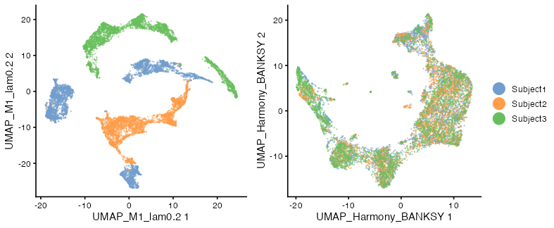
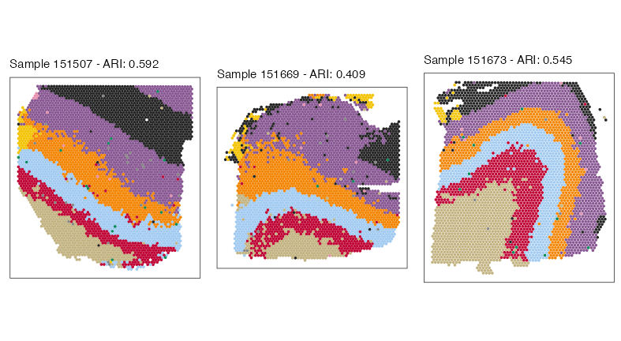

vignettes/batch-correction.Rmd
batch-correction.RmdHere, we demonstrate how BANKSY can be used with Harmony for integrating multiple spatial omics datasets in the presence of strong batch effects. We use 10x Visium data of the human dorsolateral prefrontal cortex from Maynard et al (2018). The data comprise 12 samples obtained from 3 subjects, with manual annotation of the layers in each sample.
library(Banksy)
library(SummarizedExperiment)
library(SpatialExperiment)
library(singleCellTK)
library(scran)
library(data.table)
library(harmony)
library(scater)
library(cowplot)
library(ggplot2)
library(ggspavis)
SEED <- 1000We fetch the data for all 12 DLPFC samples with the spatialLIBD package. This might take awhile.
library(spatialLIBD)
library(ExperimentHub)
ehub <- ExperimentHub::ExperimentHub()
spe <- spatialLIBD::fetch_data(type = "spe", eh = ehub)After the download is completed, we trim the SpatialExperiment object, retaining only the counts and some metadata such as the sample identifier and pathology annotations. This saves some memory.
#' Remove NA spots
na_id <- which(is.na(spe$layer_guess_reordered_short))
spe <- spe[, -na_id]
#' Trim
imgData(spe) <- NULL
assay(spe, "logcounts") <- NULL
reducedDims(spe) <- NULL
rowData(spe) <- NULL
colData(spe) <- DataFrame(
sample_id = spe$sample_id,
subject_id = factor(spe$sample_id, labels = rep(paste0("Subject", 1:3), each = 4)),
clust_annotation = factor(as.numeric(spe$layer_guess_reordered_short)),
in_tissue = spe$in_tissue,
row.names = colnames(spe)
)
colnames(spe) <- paste0(colnames(spe), "_", spe$sample_id)
invisible(gc())We analyse the first sample of each subject due to vignette runtime constraints.
spe <- spe[, spe$sample_id %in% c("151507", "151669", "151673")]
sample_names <- unique(spe$sample_id)Next, stagger the spatial coordinates across the samples so that spots from different samples do not overlap.
#' Stagger spatial coordinates
locs <- spatialCoords(spe)
locs <- cbind(locs, sample_id = factor(spe$sample_id))
locs_dt <- data.table(locs)
colnames(locs_dt) <- c("sdimx", "sdimy", "group")
locs_dt[, sdimx := sdimx - min(sdimx), by = group]
global_max <- max(locs_dt$sdimx) * 1.5
locs_dt[, sdimx := sdimx + group * global_max]
locs <- as.matrix(locs_dt[, 1:2])
rownames(locs) <- colnames(spe)
spatialCoords(spe) <- locsFind highly variable features and normalize counts:
#' Get HVGs
hvgs <- singleCellTK::getTopHVG(
singleCellTK::runSeuratFindHVG(
spe,
hvgNumber = 2000, verbose = FALSE
),
hvgNumber = 2000
)
#' Normalize data
scale_factor <- median(colSums(assay(spe, "counts")))
aname <- "normcounts"
spe <- singleCellTK::runSeuratNormalizeData(
spe,
useAssay = "counts",
normAssayName = aname,
normalizationMethod = "RC",
scaleFactor = scale_factor,
verbose = FALSE
)
spe <- spe[hvgs, ]Compute BANKSY neighborhood matrices. We use k_geom=18
corresponding to first and second-order neighbors in 10x Visium.
compute_agf <- TRUE
k_geom <- 18
spe <- computeBanksy(spe, assay_name = aname, compute_agf = compute_agf, k_geom = k_geom)Run PCA on the BANKSY matrix:
lambda <- 0.2
npcs <- 20
use_agf <- TRUE
spe <- runBanksyPCA(spe, use_agf = use_agf, lambda = lambda, npcs = npcs, seed = SEED)We run Harmony on the PCs of the BANKSY matrix:
set.seed(SEED)
harmony_embedding <- HarmonyMatrix(
data_mat = reducedDim(spe, "PCA_M1_lam0.2"),
meta_data = colData(spe),
vars_use = c("sample_id", "subject_id"),
do_pca = FALSE,
max.iter.harmony = 20,
verbose = FALSE
)
reducedDim(spe, "Harmony_BANKSY") <- harmony_embeddingNext, run UMAP on the ‘raw’ and Harmony corrected PCA embeddings:
spe <- runBanksyUMAP(spe, use_agf = TRUE, lambda = lambda, npcs = npcs)
spe <- runBanksyUMAP(spe, dimred = "Harmony_BANKSY")Visualize the UMAPs annotated by subject ID:
plot_grid(
plotReducedDim(spe, "UMAP_M1_lam0.2",
point_size = 0.1,
point_alpha = 0.5,
color_by = "subject_id") +
theme(legend.position = "none"),
plotReducedDim(spe, "UMAP_Harmony_BANKSY",
point_size = 0.1,
point_alpha = 0.5,
color_by = "subject_id") +
theme(legend.title = element_blank()) +
guides(colour = guide_legend(override.aes = list(size = 5, alpha = 1))),
nrow = 1,
rel_widths = c(1, 1.2)
)
Cluster the Harmony corrected PCA embedding:
spe <- clusterBanksy(spe, dimred = "Harmony_BANKSY", resolution = 0.55, seed = SEED)
spe <- connectClusters(spe, map_to = "clust_annotation")Generate spatial plots:
cnm <- clusterNames(spe)[2]
spatial_plots <- lapply(sample_names, function(snm) {
x <- spe[, spe$sample_id == snm]
ari <- aricode::ARI(x$clust_annotation, colData(x)[, cnm])
plotSpots(x, annotate = cnm, palette = pals::kelly()[-1], size = 0.5) +
theme(legend.position = "none", plot.title = element_text(size = 10)) +
labs(title = sprintf("Sample %s - ARI: %s", snm, round(ari, 3)))
})
plot_grid(plotlist = spatial_plots, ncol = 3, byrow = FALSE)
Vignette runtime:
#> Time difference of 2.50758 mins
sessionInfo()
#> R version 4.3.2 (2023-10-31)
#> Platform: aarch64-apple-darwin20 (64-bit)
#> Running under: macOS Sonoma 14.2.1
#>
#> Matrix products: default
#> BLAS: /Library/Frameworks/R.framework/Versions/4.3-arm64/Resources/lib/libRblas.0.dylib
#> LAPACK: /Library/Frameworks/R.framework/Versions/4.3-arm64/Resources/lib/libRlapack.dylib; LAPACK version 3.11.0
#>
#> locale:
#> [1] en_US.UTF-8/en_US.UTF-8/en_US.UTF-8/C/en_US.UTF-8/en_US.UTF-8
#>
#> time zone: Europe/London
#> tzcode source: internal
#>
#> attached base packages:
#> [1] stats4 stats graphics grDevices utils datasets methods
#> [8] base
#>
#> other attached packages:
#> [1] ExperimentHub_2.10.0 AnnotationHub_3.10.0
#> [3] BiocFileCache_2.10.1 dbplyr_2.4.0
#> [5] spatialLIBD_1.14.1 ggspavis_1.8.0
#> [7] cowplot_1.1.1 scater_1.30.0
#> [9] ggplot2_3.4.4 harmony_0.1.1
#> [11] Rcpp_1.0.11 data.table_1.14.8
#> [13] scran_1.30.0 scuttle_1.12.0
#> [15] singleCellTK_2.12.0 DelayedArray_0.28.0
#> [17] SparseArray_1.2.2 S4Arrays_1.2.0
#> [19] abind_1.4-5 Matrix_1.6-1.1
#> [21] SpatialExperiment_1.12.0 SingleCellExperiment_1.24.0
#> [23] SummarizedExperiment_1.32.0 Biobase_2.62.0
#> [25] GenomicRanges_1.54.1 GenomeInfoDb_1.38.1
#> [27] IRanges_2.36.0 S4Vectors_0.40.1
#> [29] BiocGenerics_0.48.1 MatrixGenerics_1.14.0
#> [31] matrixStats_1.1.0 Banksy_0.99.3
#> [33] BiocStyle_2.30.0
#>
#> loaded via a namespace (and not attached):
#> [1] spatstat.sparse_3.0-3 fs_1.6.3
#> [3] bitops_1.0-7 httr_1.4.7
#> [5] RColorBrewer_1.1-3 doParallel_1.0.17
#> [7] sctransform_0.4.1 tools_4.3.2
#> [9] utf8_1.2.4 R6_2.5.1
#> [11] DT_0.30 HDF5Array_1.30.0
#> [13] lazyeval_0.2.2 uwot_0.1.16
#> [15] rhdf5filters_1.13.2 sp_2.1-1
#> [17] withr_2.5.2 gridExtra_2.3
#> [19] progressr_0.14.0 cli_3.6.1
#> [21] textshaping_0.3.7 spatstat.explore_3.2-5
#> [23] labeling_0.4.3 eds_1.4.0
#> [25] sass_0.4.7 Seurat_4.4.0
#> [27] spatstat.data_3.0-3 pbapply_1.7-2
#> [29] ggridges_0.5.4 pkgdown_2.0.7
#> [31] Rsamtools_2.18.0 systemfonts_1.0.5
#> [33] dbscan_1.1-11 R.utils_2.12.2
#> [35] aricode_1.0.3 dichromat_2.0-0.1
#> [37] parallelly_1.36.0 sessioninfo_1.2.2
#> [39] attempt_0.3.1 maps_3.4.1.1
#> [41] limma_3.58.1 pals_1.8
#> [43] rstudioapi_0.15.0 RSQLite_2.3.3
#> [45] generics_0.1.3 BiocIO_1.12.0
#> [47] spatstat.random_3.2-1 ica_1.0-3
#> [49] dplyr_1.1.3 ggbeeswarm_0.7.2
#> [51] fansi_1.0.5 R.methodsS3_1.8.2
#> [53] lifecycle_1.0.4 yaml_2.3.7
#> [55] edgeR_4.0.1 Rtsne_0.16
#> [57] rhdf5_2.46.0 paletteer_1.5.0
#> [59] grid_4.3.2 blob_1.2.4
#> [61] promises_1.2.1 dqrng_0.3.1
#> [63] crayon_1.5.2 miniUI_0.1.1.1
#> [65] lattice_0.22-5 beachmat_2.18.0
#> [67] mapproj_1.2.11 KEGGREST_1.42.0
#> [69] magick_2.8.1 pillar_1.9.0
#> [71] knitr_1.45 metapod_1.10.0
#> [73] rjson_0.2.21 future.apply_1.11.0
#> [75] codetools_0.2-19 leiden_0.4.3
#> [77] glue_1.6.2 vctrs_0.6.4
#> [79] png_0.1-8 spam_2.10-0
#> [81] gtable_0.3.4 rematch2_2.1.2
#> [83] cachem_1.0.8 xfun_0.41
#> [85] mime_0.12 DropletUtils_1.22.0
#> [87] GSVAdata_1.38.0 ggside_0.2.2
#> [89] survival_3.5-7 RcppHungarian_0.3
#> [91] iterators_1.0.14 fields_15.2
#> [93] statmod_1.5.0 bluster_1.12.0
#> [95] fitdistrplus_1.1-11 interactiveDisplayBase_1.40.0
#> [97] ellipsis_0.3.2 ROCR_1.0-11
#> [99] nlme_3.1-163 bit64_4.0.5
#> [101] RcppAnnoy_0.0.21 filelock_1.0.2
#> [103] rprojroot_2.0.3 bslib_0.5.1
#> [105] irlba_2.3.5.1 KernSmooth_2.23-22
#> [107] vipor_0.4.5 colorspace_2.1-0
#> [109] DBI_1.1.3 tidyselect_1.2.0
#> [111] bit_4.0.5 compiler_4.3.2
#> [113] curl_5.1.0 BiocNeighbors_1.20.0
#> [115] desc_1.4.2 plotly_4.10.3
#> [117] bookdown_0.37 rtracklayer_1.62.0
#> [119] scales_1.2.1 lmtest_0.9-40
#> [121] rappdirs_0.3.3 goftest_1.2-3
#> [123] stringr_1.5.0 digest_0.6.33
#> [125] spatstat.utils_3.0-4 rmarkdown_2.25
#> [127] benchmarkmeData_1.0.4 XVector_0.42.0
#> [129] htmltools_0.5.7 pkgconfig_2.0.3
#> [131] sparseMatrixStats_1.14.0 highr_0.10
#> [133] fastmap_1.1.1 rlang_1.1.2
#> [135] htmlwidgets_1.6.2 shiny_1.7.5.1
#> [137] DelayedMatrixStats_1.24.0 farver_2.1.1
#> [139] jquerylib_0.1.4 zoo_1.8-12
#> [141] jsonlite_1.8.7 BiocParallel_1.36.0
#> [143] mclust_6.0.0 config_0.3.2
#> [145] R.oo_1.25.0 BiocSingular_1.18.0
#> [147] RCurl_1.98-1.13 magrittr_2.0.3
#> [149] GenomeInfoDbData_1.2.11 dotCall64_1.1-0
#> [151] patchwork_1.1.3 Rhdf5lib_1.24.0
#> [153] munsell_0.5.0 viridis_0.6.4
#> [155] reticulate_1.34.0 leidenAlg_1.1.2
#> [157] stringi_1.7.12 MASS_7.3-60
#> [159] zlibbioc_1.48.0 plyr_1.8.9
#> [161] listenv_0.9.0 parallel_4.3.2
#> [163] ggrepel_0.9.4 deldir_1.0-9
#> [165] splines_4.3.2 Biostrings_2.70.1
#> [167] sccore_1.0.4 tensor_1.5
#> [169] locfit_1.5-9.8 igraph_1.5.1
#> [171] spatstat.geom_3.2-7 reshape2_1.4.4
#> [173] ScaledMatrix_1.10.0 BiocVersion_3.18.0
#> [175] XML_3.99-0.15 evaluate_0.23
#> [177] SeuratObject_5.0.0 golem_0.4.1
#> [179] BiocManager_1.30.22 foreach_1.5.2
#> [181] httpuv_1.6.12 polyclip_1.10-6
#> [183] RANN_2.6.1 tidyr_1.3.0
#> [185] purrr_1.0.2 scattermore_1.2
#> [187] future_1.33.0 benchmarkme_1.0.8
#> [189] rsvd_1.0.5 xtable_1.8-4
#> [191] restfulr_0.0.15 later_1.3.1
#> [193] viridisLite_0.4.2 ragg_1.2.6
#> [195] tibble_3.2.1 memoise_2.0.1
#> [197] beeswarm_0.4.0 AnnotationDbi_1.64.1
#> [199] GenomicAlignments_1.38.0 cluster_2.1.4
#> [201] globals_0.16.2 shinyWidgets_0.8.0